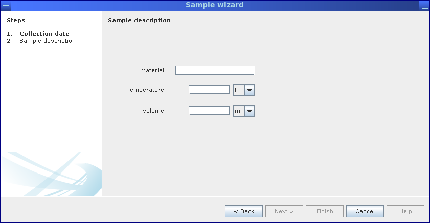
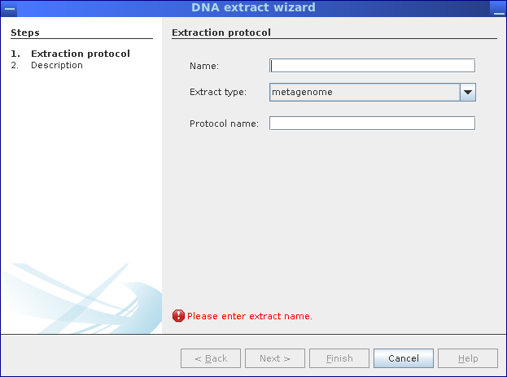
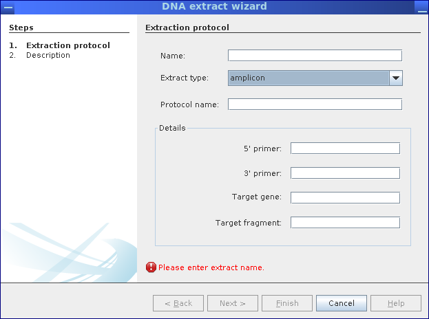

Samples and DNA extracts are created in the same way as habitats, except that samples are defined for
habitats and DNA extracts are defined based on samples. Thus, the corresponding wizards are available
from the context menu of the ”Habitat” and ”Sample” nodes, respectively.
Figure 2.8:
In the first step of the sample wizard, the sampling date is selected.
|
 |
Figure 2.9:
In the second step, the sampled material as well as temperature and sampled volume/weight
need to be entered.
|
 |
Figure 2.10:
The DNA extract wizard allows to specify the type of DNA extract (metagenome,
metatranscriptome, amplicon) and protocols used to extract the DNA.
|
 |
Figure 2.11:
Depending on DNA extract type, additional data can be provided; for amplicons, primer
names and the corresponding target gene (fragment) can be entered, for metatranscriptomes, the type of RNA depletion
methods can be selected.
|
 |
Sebastian Jaenicke, 2018-02-02